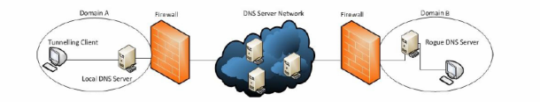

O ataque
Uma das vulnerabilidades do DNS está em se aproveitar do DNS para fazer tunelamento. O tunelamento de DNS é um ataque que consiste em explorar o DNS para esconder dados em pedidos e respostas DNS. Esses dados que são escondidos em mensagens DNS e codificados contêm desde senhas pessoais até informações que o atacante possa julgar úteis, além de o canal de tunelamento poder servir como uma forma de o atacante controlar servidores e aplicações.
No tunelamento, a máquina infectada faz uma requisição DNS recursiva. Como o domínio não existe no servidor DNS local, a requisição é feita ao servidor autoritativo que é o hospedeiro do DNS tunelado. As ferramentas presentes no servidor tunelado decodificam a informação presente no pedido e, depois de resolver a solicitação, criptografam a resposta, que é mandada de volta para o computador infectado.
Um fator que aumenta o risco de um ataque de tunelamento de DNS é a disponibilidade para download na internet de ferramentas que possibilitam esse tipo de ataque, como Iodine, dns2tcp, DNScat2 e Metasploit.

O tunelamento de DNS
Método Proposto de Defesa
O método proposto pelos pesquisadores não teria a necessidade de normalizar os dados, que passariam para o mecanismo de detecção de ataque de forma direta, diferentemente de várias outras propostas, que se baseiam nessa padronização dos dados. A ideia deles é usar pacotes de bytes como aspecto característico enquanto eles são analisados para ver se é um ataque ou tráfego de dados normal.
Para isso, foi usada uma rede neural (Modelos computacionais que podem fazer machine learning). Essa rede neural é dividida entre duas partes principais, a parte que aprende a detectar os ataques e a parte da classificação. A parte da rede neural especializada em aprender realiza a sua função a partir da apresentação de dados, que são analisados e usados para o aprendizado, o que leva à uma classificação dos pacotes de uma forma mais precisa. O modelo de rede neural utilizado para construir a rede proposta é o "feed-forward", uma rede neural que não recebe um parecer do dado analisado por ela.
Após os pesquisadores ensinarem à rede como se comportar, eles analisaram os resultados de seus experimentos a partir de três aspectos: acurácia, precisão e revocabilidade (acurácia, precisão e revocação são métricas padrões em machine learning), cujas taxas de sucesso foram 99,96%, 100%, 99,60%, respectivamente. Mostrando que o método proposto é eficaz no combate ao tunelamento de DNS.